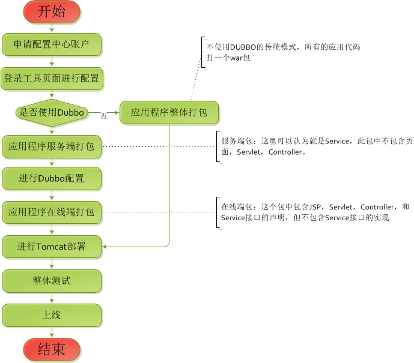

新的在线服务框架-应用部署文档
图盟科技有限公司架构组
图盟科技有限公司架构组
使用新框架完成开发后，在测试阶段和生产阶段，都需要进行部署。由于新框架基于互联网技术实现，同时提供了配置中心，数据中心和高可用的功能，因此，整个部署流程可能会比传统直接打war包部署要复杂一些。使用新框架开发部署的流程如下所示：

从上面流程途中可以看出，部署过程中主要有配置准备，分别打包服务端和在线端，把服务端部署在Dubbo，把在线端部署在tomcat，并通过duobbo的远程接口暴露方式的来实现服务端接口的调用。下面将对这几块内容分别来进行说明
对于开发阶段的项目来说，为了方便，并不建议在开发中就是用这套方式，开发中还是建议使用传统的都打在一起的方式比较好，本手册仅讨论上线部署的情况
新框架的部署对于硬件和操作系统没有强制要求，只要系统配置能够满足应用的性能要求就可以，经过我们的测试，在这里给出一个推荐配置
CPU:4物理核心以上，主频2.4G以上 内存：16G以上
下面列出新框架下的引用完整部署需要的软件环境列表：
虚拟机环境：JDK1.6+ 比较推荐1.7，因为方法区问题得到了部分改善 数据库版本：MySQL5.1以上或者阿里的RDS服务 Zookeeper集群：至少3台以上的奇数台集群，版本3.3+ Dubbo集群： 版本2.5以上 tomcat服务： 推荐 tomcat6.0 配置中心服务：由架构组开发和提供，使用版本1.0.0+ Spring：4.0.3+
关于如何安装JDK，mysql。ZooKeeper和Dubbo，本手册中不在详细说明，可以自行百度网上的安装方法，下面将来详细介绍如何在这些已经搭建好的环境中来部署新框架应用
配置中心的账号由架构组提供线下的jar工具生成或者由架构组提供，获取账号后，需要在应用的服务端的Spring配置文件目录中找到含有cc-config的配置的配置文件，并进行修改来连接配置中心。可以参照如下的配置文件方式来进行
<?xml version="1.0" encoding="UTF-8"?>
<beans xmlns="http://www.springframework.org/schema/beans"
xmlns:xsi="http://www.w3.org/2001/XMLSchema-instance" xmlns:dubbo="http://code.alibabatech.com/schema/dubbo"
xmlns:cc="http://www.autonavi.com/schema/configCenter"
xsi:schemaLocation="http://www.springframework.org/schema/beans
http://www.springframework.org/schema/beans/spring-beans.xsd
http://code.alibabatech.com/schema/dubbo
http://code.alibabatech.com/schema/dubbo/dubbo.xsd
http://www.autonavi.com/schema/configCenter
http://www.autonavi.com/schema/configCenter/aof-cc.xsd">
<cc:config>
<cc:base ref="zkCC"></cc:base>
<cc:biz ref="zkPP"></cc:biz>
</cc:config>
<bean id="zkConfig" class="autonavi.online.framework.support.zookeeper.ZooKeeperProp">
<property name="address">
<!-- 配置中心ZooKeeper地址 这里只是个例子-->
<value>10.19.2.10:2181,10.19.2.10:2182,10.19.2.10:2183</value>
</property>
<property name="sessionTimeout">
<value>1000</value>
</property>
<property name="projectName">
<value>分发的用户名</value>
</property>
<property name="password">
<value>分发的密码</value>
</property>
</bean>
<bean id="zkCC" class="autonavi.online.framework.support.zookeeper.ConfigCenterFromZooKeeper">
<property name="zooKeeperProp" ref="zkConfig"></property>
</bean>
<bean id="zkPP" class="autonavi.online.framework.support.zookeeper.GetPropertiesDataFromZooKeeper">
<property name="zooKeeperProp" ref="zkConfig"></property>
</bean>
</beans>
随后使用架构组提供的配置中心地址或者各个应用自己部署的配置中心地址进行数据源和分库分表信息的配置。这个可以参考用户手册
dubbo以集群的方式进行部署，现在以其中一个点的部署来说明部署过程。
第一步：在服务端的程序的src目录中增加一个目录叫做dubbo-server，并在这个目录中建立一个配置文件叫做provider.xml,将这个配置文件的修改为如下的模式，来暴露需要提供服务的接口
<?xml version="1.0" encoding="UTF-8"?>
<beans xmlns="http://www.springframework.org/schema/beans"
xmlns:xsi="http://www.w3.org/2001/XMLSchema-instance"
xmlns:dubbo="http://code.alibabatech.com/schema/dubbo"
xsi:schemaLocation="http://www.springframework.org/schema/beans http://www.springframework.org/schema/beans/spring-beans.xsd http://code.alibabatech.com/schema/dubbo http://code.alibabatech.com/schema/dubbo/dubbo.xsd">
<!-- 声明需要暴露的服务接口 根据实际情况自定义 类似使用spring 需要注意此处暴露的是接口，而不是实现-->
<!-- ref中的名字需要和已经定义Springbean的id对应上-->
<dubbo:service interface="com.autonavi.demo.service.DemoWzyService" ref="demoWzyService" />
</beans>
第二步：服务端的程序打包成一个jar。这个jar要包含所有配置文件，将这个jar和服务端程序依赖的所有jar文件拷贝到dubbo环境的lib目录下。此处需要注意下，请在拷贝时候删除dubbo的lib目录下的spring*.jar和duobbo-demo*.jar,同时，如果服务端依赖的jar包dubbo下lib的jar包同名的话，优先使用版本高的，请仔细检查下。
第三步：在dubbo的conf目录下找到dubbo.properties文件，在这个文件的最后一行加上如下的参数,这里有两个路径的配置，分别是spring配置文件的位置和dubbo配置文件位置，可以自由定义更改
dubbo.spring.config=classpath*:conf/*.xml,classpath*:dubbo-server/*.xml
第四步：启动Dubbo，监控Dubbo日志，如果报错根据报错信息进行调试。
需要注意的几点：
1.一个Dubbo可以部署多个不同的服务端程序，但是这雪程序公用一个虚拟机，需要注意暴露的接口名称是否冲突的问题 2.常见的启动异常一般为配置文件错误或者缺少jar包造成，可以从这两点入手排错。
新架构在线端主要包含就jsp,Servlet,Controller这些直接面对前端的程序，一般情况下使用tomcat或者jetty这些作为容器，也会采取集群模式，下面以一个点的部署为例:
第一步：在这个应用的配置文件目录中加入一个xml配置文件，比如名称为provider.xml,并配置Spring加载这个文件 内容如下：
<?xml version="1.0" encoding="UTF-8"?>
<beans xmlns="http://www.springframework.org/schema/beans"
xmlns:xsi="http://www.w3.org/2001/XMLSchema-instance"
xmlns:dubbo="http://code.alibabatech.com/schema/dubbo"
xsi:schemaLocation="http://www.springframework.org/schema/beans
http://www.springframework.org/schema/beans/spring-beans.xsd
http://code.alibabatech.com/schema/dubbo
http://code.alibabatech.com/schema/dubbo/dubbo.xsd
">
<!-- 消费方应用名，用于计算依赖关系，不是匹配条件，不要与提供方一样 -->
<dubbo:application name="consumer-of-helloworld-app" />
<!-- 使用multicast广播注册中心暴露发现服务地址 -->
<dubbo:registry protocol="zookeeper" address="10.161.159.52:2181,10.132.53.4:2181,10.132.27.5:2181,10.162.107.180:2181,10.162.107.18:2181" />
<!-- <dubbo:registry protocol="zookeeper" address="114.215.174.52:2181,114.215.175.10:2181,115.29.221.178:2181,121.199.44.154:2181,121.199.50.167:2181" /> -->
<!-- 生成远程服务代理，可以和本地bean一样使用demoService -->
<dubbo:reference id="demoWzyService" interface="com.autonavi.demo.service.DemoWzyService" />
第二步：如果在线端应用的Spring配置中存在id=demoWzyService的扫描注入或者直接注入，建议注释掉。如下可能就是要注释掉的情况。
<!-- 可能需要注释的部分--> <!-- 建议开发过程中Service部分单独进行扫描配置--> <context:annotation-config /> <context:component-scan base-package="com.autonavi.demo.service.*"> <context:exclude-filter type="annotation" expression="org.springframework.stereotype.Controller" /> <context:exclude-filter type="aspectj" expression="com.gd.app.security.edit..*" /> </context:component-scan>
第三步：将整体程序打包为war进行部署，并监控中间键日志。
第四步：测试完成整个部署。